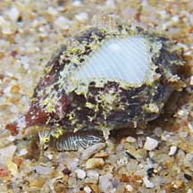
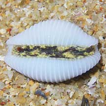
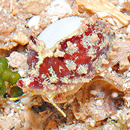
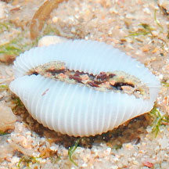

|
|
| shelled snails text index | photo index |
| Phylum Mollusca > Class Gastropoda |
| Bean
cowries Family Triviidae updated Sep 2020 Where seen? This tiny snail resembles a cowrie but belongs to a different family. It is found in coral reefs under rocks. Features: About 1cm. The shell is white, oval with regular parallel ridges all around the shell including the upper side. There is a prominent groove along the length of the upper side, cutting across the ridges. What do they eat? Bean cowries are believed to be predatory, feeding on compound ascidians. Status and threats: Trivirostra oryza oryza is listed as 'Endangered' in the Red List of threatened animals of Singapore. According to Davison, it was commonly found prior to the 1970s but has not been seen since. |
|
 Sentosa, Dec 09 |
 |
 Cyrene Reef, Jun 11 |
 |
|
|
| Family
Triviidae recorded for Singapore from Wee Y.C. and Peter K. L. Ng. 1994. A First Look at Biodiversity in Singapore. in red are those listed among the threatened animals of Singapore from Davison, G.W. H. and P. K. L. Ng and Ho Hua Chew, 2008. The Singapore Red Data Book: Threatened plants and animals of Singapore. ^from WORMS
|
Links
References
|